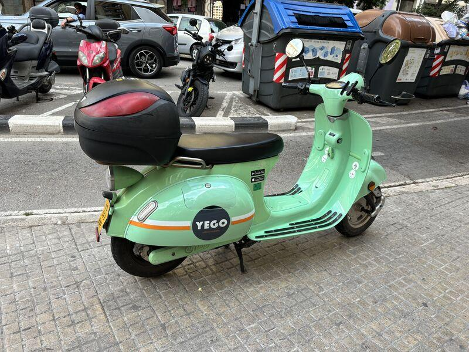

Мне нравится, что здесь море — часть обычной жизни. Можно просто пойти погулять по пляжу, посидеть у воды и немного отвлечься от всего.
Валенсия — красивый город с вкусной едой, солнцем и своим неспешным ритмом. Близость моря помогает расслабиться, даже когда приезжаешь сюда не в отпуск, а просто пожить и поработать.
Нажмите на маркер, чтобы узнать больше, или листайте карточки под картой.
Загружаем карту и места…
Здесь несколько мест, куда я люблю возвращаться. За хорошим кофе, чтобы поработать с ноутбуком, встретиться с друзьями или просто приятно провести время.

Я часто езжу по Валенсии на электрических мопедах YEGO. Здесь тепло большую часть года, и очень приятно ехать по городу, чувствуя ветер. Для меня это один из самых любимых способов передвижения.
Мопеды можно арендовать через приложение YEGO: находишь ближайший, бронируешь и едешь куда нужно. Главное — заранее проверить условия аренды, необходимые водительские права и зоны парковки.
Как пользоваться YEGO в Валенсии →Мне нравится, что здесь море — часть обычной жизни. Можно просто пойти погулять по пляжу, посидеть у воды и немного отвлечься от всего.
Валенсия — красивый город с вкусной едой, солнцем и своим неспешным ритмом. Близость моря помогает расслабиться, даже когда приезжаешь сюда не в отпуск, а просто пожить и поработать.
Нажмите на маркер, чтобы узнать больше, или листайте карточки под картой.
Загружаем карту и места…
Здесь несколько мест, куда я люблю возвращаться. За хорошим кофе, чтобы поработать с ноутбуком, встретиться с друзьями или просто приятно провести время.
Я часто езжу по Валенсии на электрических мопедах YEGO. Здесь тепло большую часть года, и очень приятно ехать по городу, чувствуя ветер. Для меня это один из самых любимых способов передвижения.
Мопеды можно арендовать через приложение YEGO: находишь ближайший, бронируешь и едешь куда нужно. Главное — заранее проверить условия аренды, необходимые водительские права и зоны парковки.
Как пользоваться YEGO в Валенсии →I love that the sea is part of everyday life here. You can just go for a walk along the beach, sit by the water and take a break from everything.
Valencia is a beautiful city with delicious food, sunshine and its own unhurried rhythm. Being near the sea makes it easier to relax, even when you come not for a holiday but simply to live and work for a while.
Select a marker to find out more, or browse the cards below the map.
Loading the map and places…
Here are a few places I love returning to — for good coffee, some time working on my laptop, meeting friends or simply enjoying myself.
I often get around Valencia on YEGO electric mopeds. It is warm here for most of the year, and riding through the city with the breeze is lovely. For me, it is one of my favourite ways to get around.
You can rent a moped through the YEGO app: find one nearby, reserve it and ride where you need to go. Just make sure to check the rental conditions, required driving licence and parking zones beforehand.
How to use YEGO in Valencia →